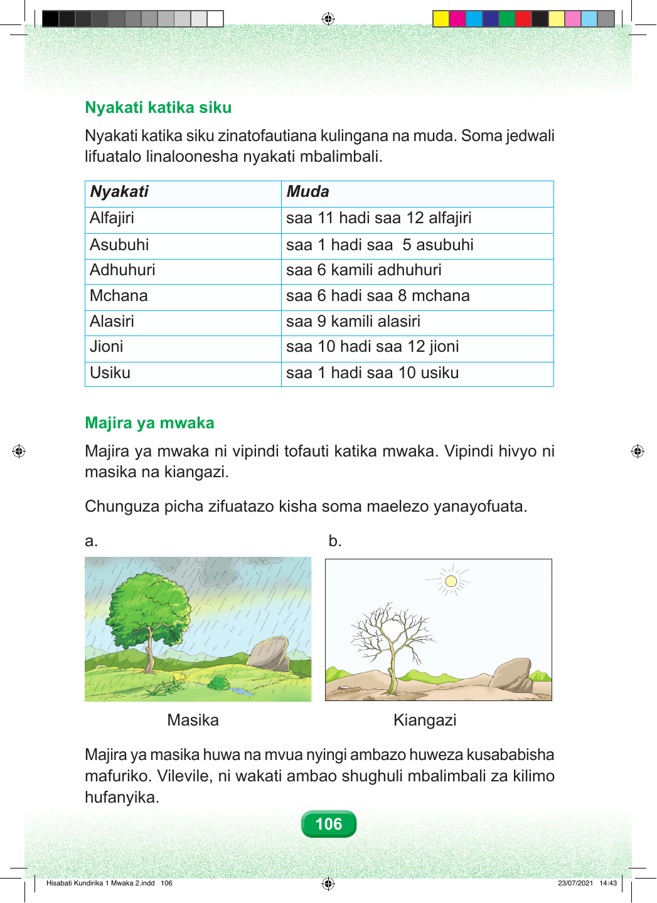

Nyakati katika siku Nyakati katika siku zinatofautiana kulingana na muda. Soma jedwali lifuatalo linaloonesha nyakati mbalimbali. Nyakati Muda Alfajiri saa 11 hadi saa 12 alfajiri Asubuhi saa 1 hadi saa 5 asubuhi Adhuhuri saa 6 kamili adhuhuri Mchana saa 6 hadi saa 8 mchana Alasiri saa 9 kamili alasiri Jioni saa 10 hadi saa 12 jioni Usiku saa 1 hadi saa 10 usiku Majira ya mwaka Majira ya mwaka ni vipindi tofauti katika mwaka. Vipindi hivyo ni masika na kiangazi. Chunguza picha zifuatazo kisha soma maelezo yanayofuata. a. b. Masika Kiangazi Majira ya masika huwa na mvua nyingi ambazo huweza kusababisha mafuriko. Vilevile, ni wakati ambao shughuli mbalimbali za kilimo hufanyika. 106 Hisabati Kundirika 1 Mwaka 2.indd 106 23/07/2021 14:43